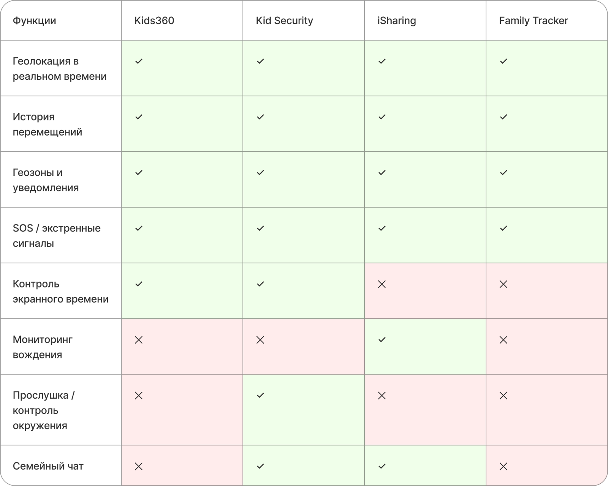
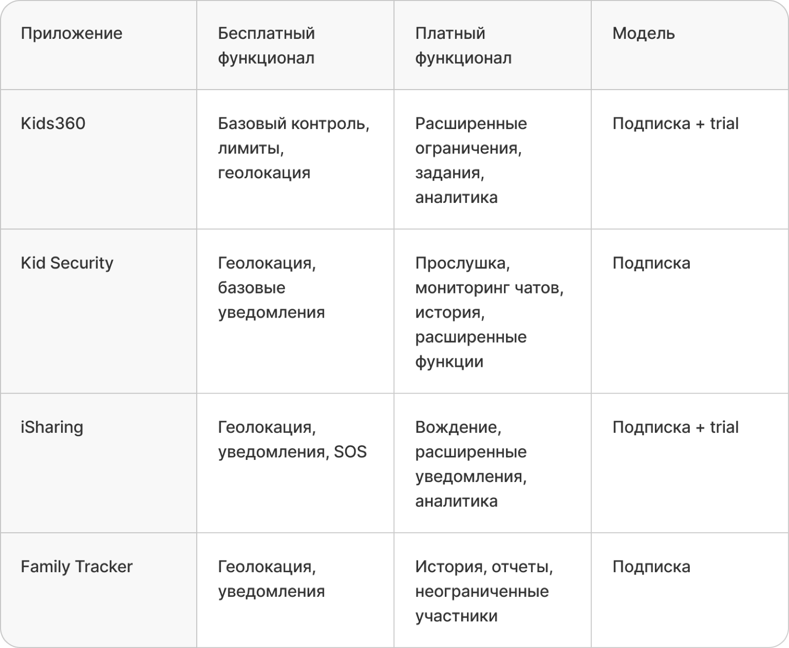
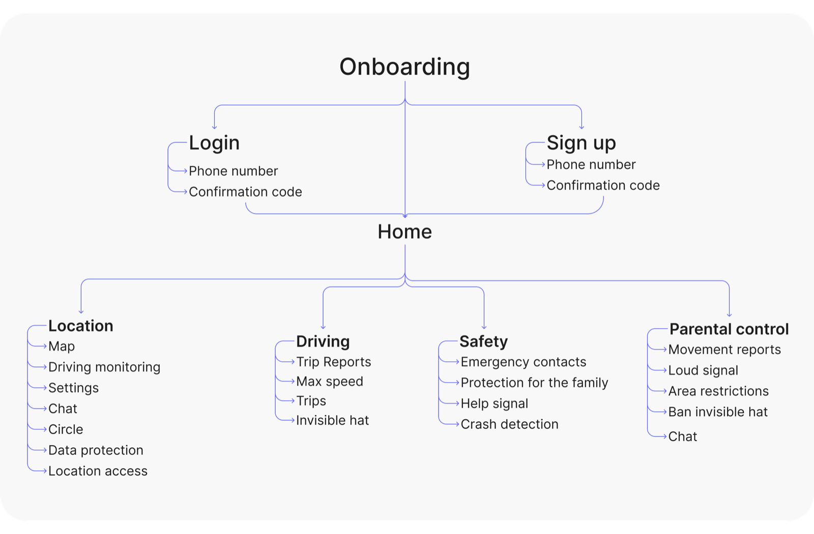
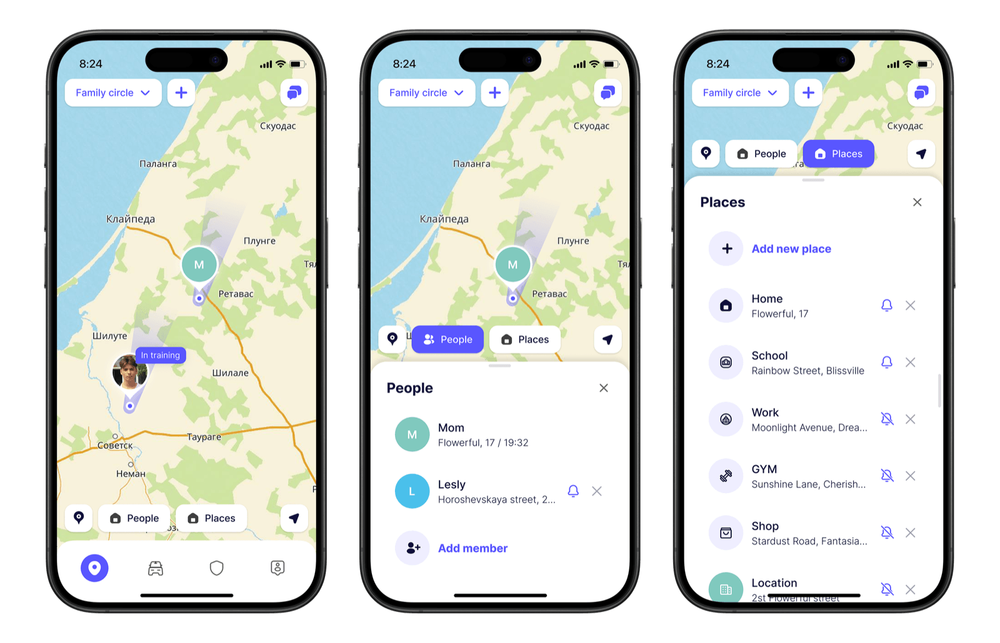
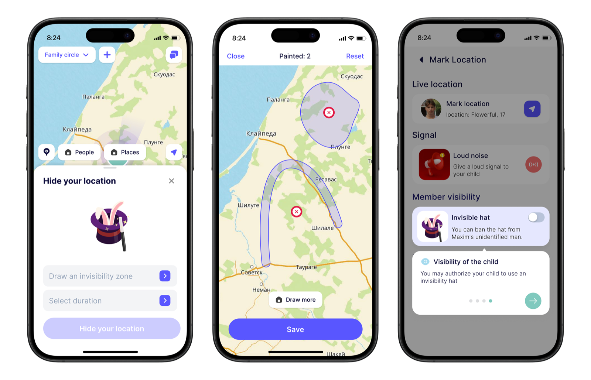
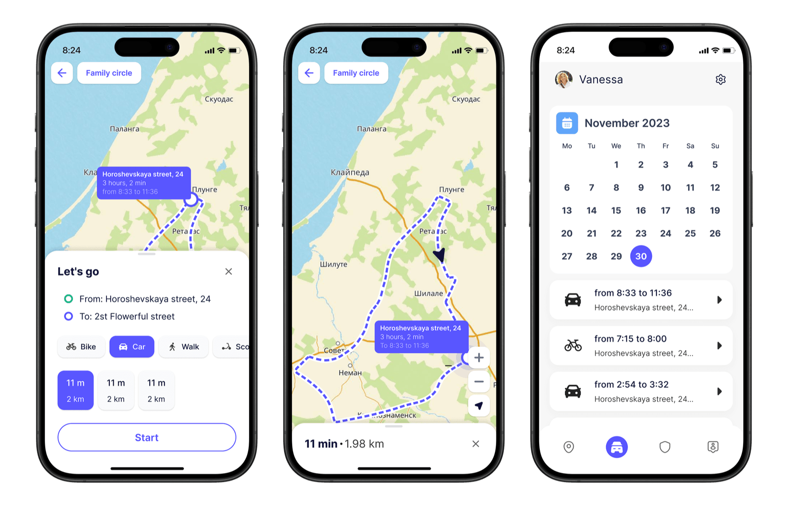
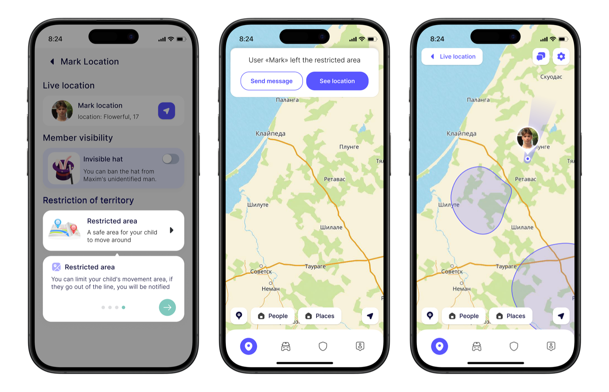
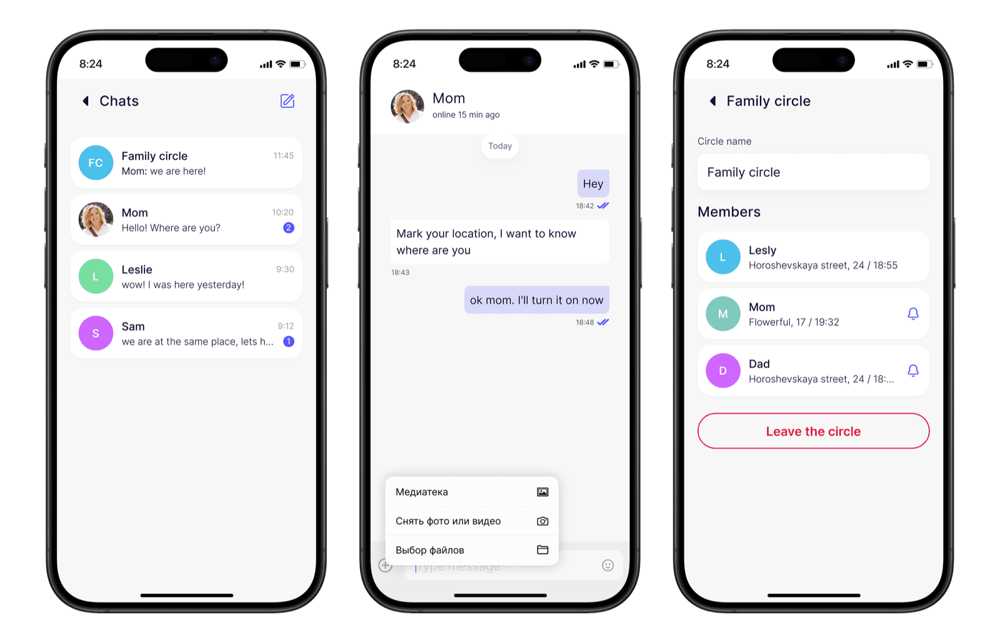

Разработать единое мобильное решение, которое помогает семьям оставаться на связи и быть уверенными в безопасности близких, объединяя геолокацию, экстренные оповещения и быструю коммуникацию в одном приложении.
Основной фокус: обеспечить безопасность членов семьи, не создавая ощущения тотального контроля. Важно было найти баланс: дать родителям инструменты для спокойствия, не вызывая сопротивления у детей и подростков.
Вместо глубинных интервью сосредоточилась на анализе существующих решений: Kids360, Kid Security, iSharing и Family Tracker: какие функции предлагают, на чём делают акцент и какие сценарии используют для удержания пользователей.

Большинство приложений используют модель freemium: базовые функции бесплатны, а расширенные возможности открываются по подписке. Бесплатной версии чаще всего достаточно только для базового отслеживания, а ключевые сценарии безопасности и контроля скрыты за paywall.

Исследование определило не только продуктовое направление, но и реалистичный масштаб MVP, учитывая высокую техническую сложность решений в области семейного трекинга:
Работа с GPS в реальном времени
Геофенсинг
Обработка маршрутов
Интеграция с картографическими API
Разработать мобильное приложение для семейной безопасности со сценариями отслеживания местоположения, экстренных уведомлений и встроенного чата для общения.
По результатам исследования проработала user flow, основанный на ключевых сценариях использования продукта.

Спроектирован вокруг интерактивной карты: члены семьи в реальном времени с актуальным статусом, быстрое переключение между людьми и местами, быстрые действия и построение маршрута прямо внутри приложения, по логике, аналогичной картографическим сервисам.

Гипотеза: возможность временно скрывать местоположение повысит доверие к продукту и снизит ощущение контроля. Тестирование показало: респонденты позитивно восприняли саму возможность скрытия, но в родительском сценарии это вызвало вопросы: теряется контроль над ребёнком.

Доработали логику: родитель может ограничить возможность скрытия геолокации для ребёнка. Это сохранило контроль в детском сценарии и дало взрослым пользователям управление своей приватностью.
Добавили историю поездок за последние 30 дней с возможностью просматривать собственные маршруты. Функция доступна в рамках премиум-подписки и не отображается другим участникам семейного круга. Это расширило сценарии использования без усложнения базового опыта.

Добавила функцию создания геозон, где родитель может вручную нарисовать или выбрать на карте область допустимого перемещения ребёнка. При выходе за пределы зоны отправляется уведомление.

Включает базовые сценарии семейной безопасности и коммуникации: отслеживание геолокации в реальном времени, геофенсинг, уведомления о перемещениях и встроенный чат для общения внутри семейного круга. Все ключевые функции конкурентных приложений адаптированы под единый пользовательский опыт.

Спроектирован и запущен MVP мобильного приложения для семейной безопасности. Расширенная аналитика перемещений и гибкие настройки приватности зафиксированы как направление для дальнейшего развития.